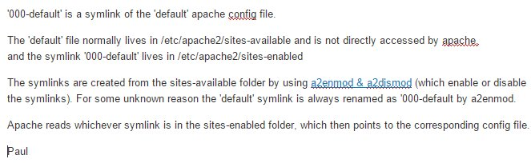

Yesterday I installed emoncms v6 on CentOS 5. I chose v6 as I wanted to avoid installing redis on my machine. I understand that emoncms expects to live in /var/www/emoncms while CentOS has a default document root at /var/www/html. Using an Alias directive and a <directory /var/www/emoncms> entry I got the login page to load correctly. I have also verified that mod_rewrite is on and using the .htaccess file. The backend is MySQL and the database got populated with tables, so access is working there as well.
On to the actual question.... When I try to register a user nothing happens. I see a red bar appearing (where an error message would have to appear?), but there is no error message shown. In the error_log of Apache it shows "File does not exist: /var/www/html/var". Similar issues are reported and seem to be related to mod_rewrite, but as far as I can tell that is working. I tested by forcing a rewrite to the Google webpage (from the .htaccess file) and that redirect worked without problems. What should I try next?
Re: New instance - cannot register user
Could there be a CentOS configuration for where public html should be that is conflicting, causing the error "File does not exist: /var/www/html/var", it sounds like you have everything else ok.
Might be worth checking the response in your browser console window to a login request it may give some more debug info to go on. Check the response under the 'Network' tab in chrome or firefox
Re: New instance - cannot register user
Thanks Trystan for the quick reply. I have tried the console from Firefox as you suggested and when I hit the register button it shows a 404 for the URL http://hostname.local.lan/emoncms/user/register.json. The login page is shown when I go to http://hostname.local.lan/emoncms, so the URL appears to be correct. The access, rewrite and error logfiles of Apache don't show this 404 error or the emoncms/user/register.json URL which I would have expected.
Anything else I should try?
Re: New instance - cannot register user
I'm also having the same issue.
I did find why there are no 404 being shown in the logs. The .htaccess file is configured to send the error to another file that doesn't exist (/home/<some username>/error.log
Is is the error I'm getting:
PHP Fatal error: Call to a member function fetch_array() on a non-object in /var/www/html/emoncms/Modules/user/user_model.php on line 377
This error relates to this line:
$result = $this->mysqli->query("SELECT id FROM users WHERE username = '$username';");
$row = $result->fetch_array();
What interesting, and I haven't really started to look into the source code is I'm using redis and not mysql
Re: New instance - cannot register user
tsjoender: the error 404 for the URL http://hostname.local.lan/emoncms/user/register.json is what you would expect if mod_rewrite is not configured properly, might be worth checking the 000-default settings again and doing an apache2 restart?
spoutin: I will fix the htaccess issue. Are you upgrading or installing from scratch, is sounds like the database has not been setup fully. The redis version of emoncms still uses mysql for disk persistence.
Re: New instance - cannot register user
Thanks, i didn't have the database created. I didn't realize I needed both databases. I have never used redis before and I wasn't sure how it worked.
Tsjoeder: To check if mod_rewrite is installed on Centos look at the following things.
cat /etc/httpd/conf/httpd.conf |grep rewrite
LoadModule rewrite_module modules/mod_rewrite.so
you should see the above output. Also ensure the module is not commented out (look for the #)
vi or nano /etc/httpd/conf/httpd.conf
look for the following line:
<Directory "/var/www/html">
then scroll down from there and look for
AllowOverride
it should be set to All (default is None)
That should be it.
On another note, I didn't create an alias for emoncms to run out of /var/www. I'm running it from /var/www/html/emoncms and it seems to be working ok.
Re: New instance - cannot register user
First of all: Happy new year to you all!
Thanks again Trystan and thanks Spoutin for your time. I had tried to change the PHP logfile location (to /var/tmp), but then no file is created, so no
logs I could check. I had also tried the AllowOverride All in the <directory>/var/www/html</directory> section, but unfortunately no success either.
Mod_rewrite seems to work because if I comment out:
RewriteRule ^(.*)$ index.php?q=$1 [L,QSA]
and replace it with
RewriteRule ^(.*)$ http://www.google.com [R]
Then I'm sent to the Google page when I enter the URL http://hostname.local.lan/emoncms/bla. This is why I do not suspect that mod_rewrite is not active,
but maybe this test is not conclusive?
Interestingly when I move the emoncms directory to /var/www/html and remove the alias, but add the AllowOverride All to a
<directory>/var/www/html/emoncms</directory> section, then the error "File does not exist: /var/www/html/var" is not shown anymore in the Apache error log.
Furthermore the PHP errorfile is now created and shows the error:
"PHP Fatal error: Call to undefined function filter_var() in /var/www/html/emoncms/Modules/user/user_model.php on line 140"
That seems related to my PHP version being 5.1.6 as the filter_var function is introduced in 5.2.x... The server on which I intend to run Emoncms runs
other things as well, so upgrading may break things. I'll think about how to proceed on this one... Perhaps I'll start with an Ubuntu virtual machine to
test Emoncms out.
Re: New instance - cannot register user
I'm having trouble with an install of emoncms on debian wheezy, and could use some advice.
I tried using apt-get and the pre-packaged install, but that method seems to be broken.
So I tried following the instructions here:
https://github.com/emoncms/emoncms/blob/master/docs/LinuxInstall.md
All went swimmingly until I got to:
For <Directory /> and <Directory /var/www/> change AllowOverride None to AllowOverride All. This may be on lines 7 and 11 of /etc/apache2/sites-available/000-default. Modern versions of Ubuntu store these in the main config file: /etc/apache2/apache2.conf.
$ sudo nano /etc/apache2/sites-available/000-default
or
$ sudo nano /etc/apache2/apache2.conf
/etc/apache2/apache2.conf contains no <Directory ...> entries at all, and /etc/apache2/sites-available/000-default doesn't exist.
I carried on until this point:
Update your database settings to use your new secure password:
$username = "USERNAME"; $password = "YOUR_SECURE_PASSWORD_HERE"; $server = "localhost"; $database = "emoncms";
I assumed username=emoncms and password=<the secure one I created during MySQL setup>.
But at the end of the install, I find I cannot register a user.
http://192.168.0.13/emoncms/user/register.json gives me "404 Not Found" in the console.
I tried following the suggestions here:
http://blog.asiantuntijakaveri.fi/2013/11/ubuntu-1310-x64-with-emoncms.html
regarding .htaccess setup and <Directory ...> entries in /etc/apache2/apache2.conf but now I get "500 Internal Server Error".
I've reached the outer limits of my knowledge: can anyone point me in the right direction?
Many thanks
Re: New instance - cannot register user
Hi
I just ran into this config edit problem.
Try sudo nano /etc/apache2/sites-enabled/000-default
I think the directory has been changed.
Edit
I also have a problem on a new installation on a Pi.
I can reach the login page but register does not work, I just get a pink line. I am fairly sure I have followed the instructions correctly. Any ideas anyone?
Regards
Ian
Re: New instance - cannot register user
I recall not being able to find a "sites-enabled" file when I last had a similar issue, Since then I've used the following to create the "sites-enabled" during a scripted installation process
sudo sh -c "echo 'Alias /emoncms /var/www/emoncms' > /etc/apache2/sites-available/emoncms"
sudo sh -c "echo '<Directory /var/www/emoncms>' >> /etc/apache2/sites-available/emoncms"
sudo sh -c "echo ' Options FollowSymLinks' >> /etc/apache2/sites-available/emoncms"
sudo sh -c "echo ' AllowOverride All' >> /etc/apache2/sites-available/emoncms"
sudo sh -c "echo ' DirectoryIndex index.php' >> /etc/apache2/sites-available/emoncms"
sudo sh -c "echo ' Order allow,deny' >> /etc/apache2/sites-available/emoncms"
sudo sh -c "echo ' Allow from all' >> /etc/apache2/sites-available/emoncms"
sudo sh -c "echo '</Directory>' >> /etc/apache2/sites-available/emoncms"
sudo a2ensite emoncms
sudo service apache2 restart
Paul
Re: New instance - cannot register user
Ian,
that is exactly the error I have.
A trawl through Apache2 docs suggests sites-enabled and sites-available directories serve separate functions, but I will look into it further and report back!
Thanks for the pointer.
Re: New instance - cannot register user
Paul,
I've read the Apache2 docs, which suggest that what you've done there is create a new virtual host and enable it, rather than edit the default one. That is probably the right way to do it.
I don't seem to have a config file called "000-default":possibly it is just called "default"? That's what threw me, being an Apache2 noob!
I need to investigate further.
Thanks for the hint.
Matt
Re: New instance - cannot register user
I suspect the "default" apache2 setup may have changed at some point maybe, if (at least) 3 of us have failed to find the same file in the location many before us have found it ok.
Interested to hear what you find, as I can't explain why it didn't work, I just remember what I did to get it to work
Paul.
Re: New instance - cannot register user
I currently can't post certain code in the forum because the spam rules keep banning me!! (3 times in last 24hrs), but there is always a way around things until it gets sorted....

CORRECTION - the above should read a2ensite & a2dissite.
Re: New instance - cannot register user
Paul, Ian,
The good news: I got it to work!
Thanks for the guidance.
Annoyingly, I keep getting blocked when I try to post my solution!
Something in there the forum's filters are objecting to (this thread http://openenergymonitor.org/emon/node/10037).
Matt
Re: New instance - cannot register user
Paul
I have the same problem posting, but I found the same.
I got it working by editing the default virtual host.
When I tried to create my own emoncms virtual host, I couldn't make it work.
I believe the default symlink gets prefixed 000- so that it gets enabled 1st at run time.
Did you mean a2ensite and a2dssite to enable/disable virtual hosts?
Matt
Re: New instance - cannot register user
Matt
For the linux challenged (me in this instance) can you give the exact steps you have to do to get it to work.
Ian
Re: New instance - cannot register user
Matt, yes of course a2ensite and a2dissite!!
I was distracted by being banned 3 times by the OEM server whilst posting the above!!
Ian, Do you have 'sites-available' and 'sites-enabled' folders?
If you have a 'sites-available' folder, does it contain an apache configuration file called 'default'?
If so, you need to edit that file in accordance with your installation (make a backupcopy of it first), and then create a symlink (which will be automatically named 000-default) in your 'sites-enabled folder. So from your 'sites-available folder;
So now when Apache runs, it will look in the 'sites-enabled' folder and read the 'default' file in ''sites-available' via the symlink.
Hope this helps.
Paul
Re: New instance - cannot register user
Ian,
I'd love to, but seem to be banned from posting certain things!
Matt
Re: New instance - cannot register user
Hi Ian, Sent you a PM.
Re: New instance - cannot register user
Hi there, I have the same problem, could you please also let me know how you solved it ?
thanks !
Tony
Re: New instance - cannot register user
I did it by adding this:
<Directory /var/www/html/emoncms/>
Options Indexes FollowSymLinks
AllowOverride All
Require all granted
</Directory>
In the /etc/apache2/apache2.conf file
Re: New instance - cannot register user
Hi fluppie,
Interesting that you posted the same "fix" as shown here. (with the exception of html in your path, it's identical)
It's dated - timestore was in use when it was written.
Some rather eye-opening comments regarding the mod rewrite stanza are on that page too.